成員 :
1411222012 陳品錞(組長)
1411222008 吳宜蓁
1411222047 賴俊宇
1411222050 黃銘紳
1411222055 李進光
1411107040 黎姵妘
指導老師 :
陳賢錫、徐豐明
壹、封面
貳、發想
參、遊戲類型
肆、故事大綱
伍、遊戲流程
一、遊戲玩法
二、關卡挑戰
三、動畫
四、陷阱障礙
五、道具
陸、主角設計
柒、介面概念設計
捌、程式列表
玖、工作分配
拾、進度表
壹、封面
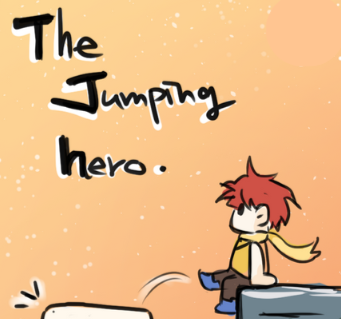
貳、發想
選擇2050年作為背景年份，突顯末日危機的迫切性，且勇者踏上跳躍之旅時，的危機感。世界面臨資源枯竭、環境變化、怪物出現等問題，這些挑戰使得地球不再適宜居住，人類必須尋找新的生存地。藉由操控角色並向上跳躍的有趣性進行遊戲。
參、遊戲類型
2D跳躍、動作冒險
肆、故事大綱
在2050年，世界面臨著一個末日危機，為了生存下去，一位勇敢的冒險者踏上了一段跳躍之旅，前往宇宙探索新生存地。他跳過森林、跳上天空、跳上宇宙，直到找到新的生存地，一路向上跳躍著，途中暗藏著寶藏與危機，向上探索著未知的旅程，最終他找到了適合繼續生存的超級星球。
伍、遊戲流程
一、遊戲玩法
玩家操控一個小冒險者角色，控制角色向上跳躍，玩家有3條生命，被怪物擊中則失去一條生命，必須重新向上(角色被擊中墜落時，仍然可以控制角色)，但在一定的位子會設有存檔點，躲避陷阱、收集道具跟金幣，並挑戰自己能跳得多高，分數累積會經由陷阱、道具、金幣做加減分，最後會依照分數做各玩家之間的排名。
◎操作:按住滑動搖桿控制角色左右，手指點擊螢幕可向上跳躍(長按增加跳躍力)。
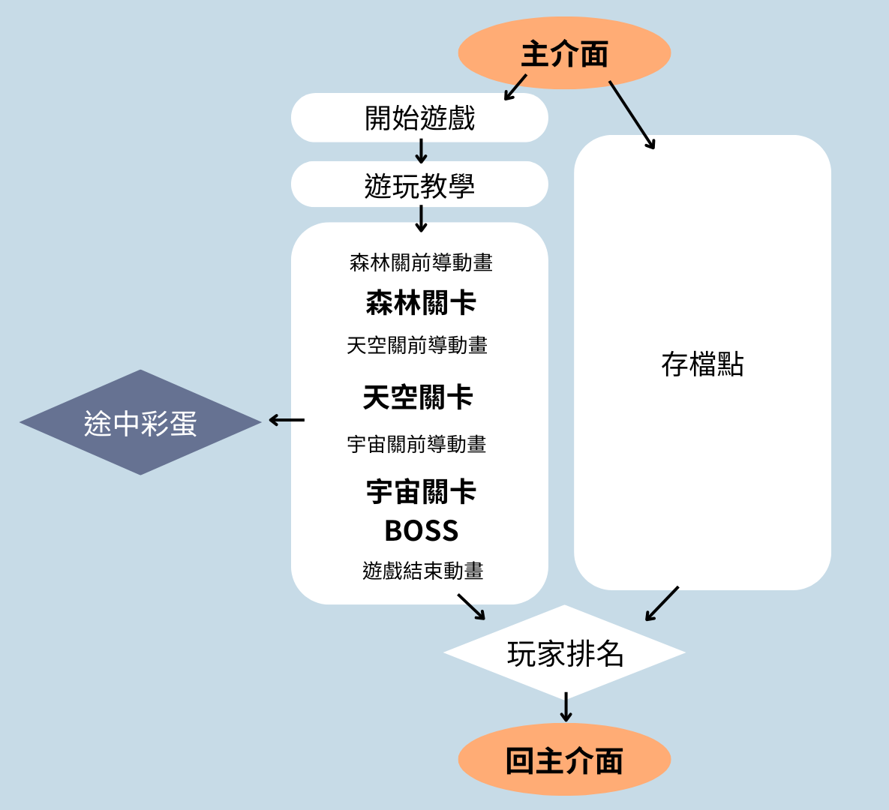
二、關卡挑戰
◎主要關卡：
分為森林、天空、宇宙，隨著跳得越高，關卡的難度會增加，能跳到的平台更少或移動平台越快，出現更多陷阱和障礙。
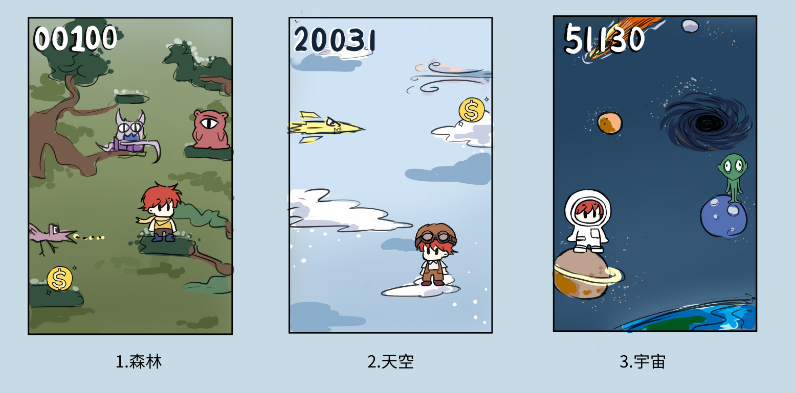
◎最終Boss關卡(攻擊加分，被攻擊扣分)：
主角的到來，引起了超級星球沉睡已久的星球守護者喚醒。由於它已被遺棄了一段時間，導致系統損壞，暴躁四處破壞。主角需要打敗它才能確保超級星生存地球的安全與適合成為新生存地。它會有三種攻擊方式並且有5格生命值。
攻擊方式:
1.拋石塊:擊中主角會造成傷害，擊中地上將會掉落護盾
2.發射能量球:擊中主角會造成傷害，護盾可以反彈並且傷害boss
3.機械手臂:伸展機械手臂攻擊玩家，並造成傷害
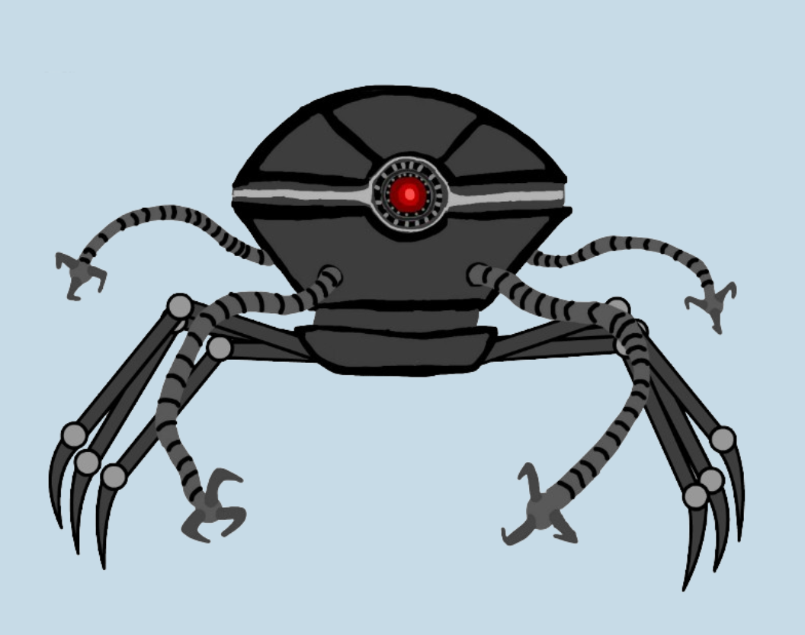
◎途中隱藏彩蛋：
玩家觸及到隱藏機制，角色則跳躍到另一個境界(有時間限制)，金幣增加，無陷阱跟障礙。
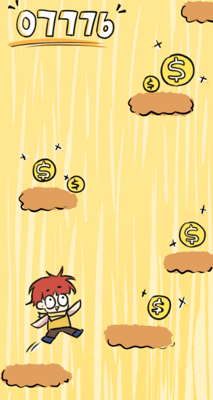
三、動畫
◎森林關卡
開始動畫：主角在尋求生存途中發掘了神奇魔豆，並在森林中下了它，出乎意外的，這棵魔豆迅速成長，成了他向上探險的道路。
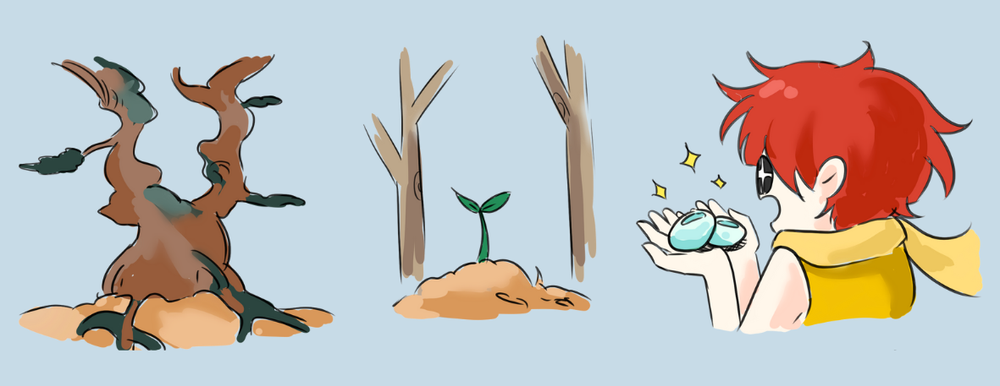
◎天空關卡
開始動畫：到了魔豆成長的頂端，有一個精靈為他施展了魔法，使他踏在雲朵中不會輕易墜落，他就踏著一朵朵雲繼續向上探索。
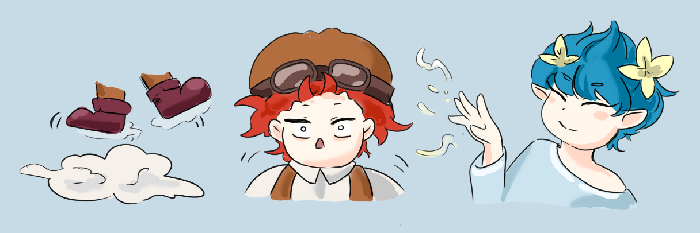
◎宇宙關卡
開始動畫：到了天空的頂端有一座天空中的城堡，主角找到了被遺棄的飛船，飛到宇宙中繼續向上探險。
結束動畫：最終他找到了適合居住的超級星球，新的生存地。
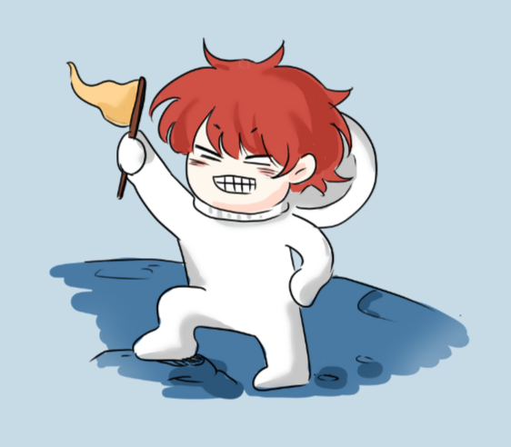
四、陷阱障礙
遊戲中的扣分機制。
◎森林關卡
史萊姆:觸碰到史萊姆黏液會暫時無法行動。
飛鳥:飛鳥會遠程攻擊主角，扣遊玩積分。
熊怪:熊怪會使出熊掌攻擊，主角會飛出去，掉落到下方。
◎天空關卡
氣流:有氣流的地方，主角會上下亂飛動，直到無氣流停止。
飛彈:被飛彈打擊會扣相對較大的分數，並被撞飛。
輻射:角色跳躍速度減緩。
◎宇宙關卡
黑洞:會被隨機傳送到不同的地方。
外星人攻擊:會被外星人飛船載到下面的地方。
隕石:被隕石打到會飛出去並墜落。
五、道具
遊戲中的加分機制，得到後會馬上使用。
◎「護盾」—在一定時間內，使角色免疫傷害。
◎「寶箱」—隨機道具或陷阱。
◎「金幣」—加分作用。
◎「火箭」—短暫向上衝刺，不會掉入陷阱跟障礙。
◎「磁鐵」—自動吸取一定範圍內的道具或金幣。
陸、主角設計
勇者(冒險者)，分別在森林、天空、宇宙分別有不一樣的服裝。
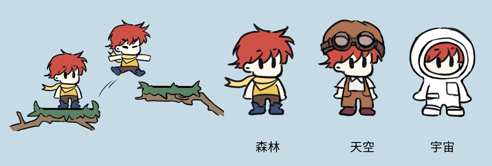
柒、介面概念設計
◎遊戲開始介面:以簡單的方式呈現開始遊戲與存檔點。
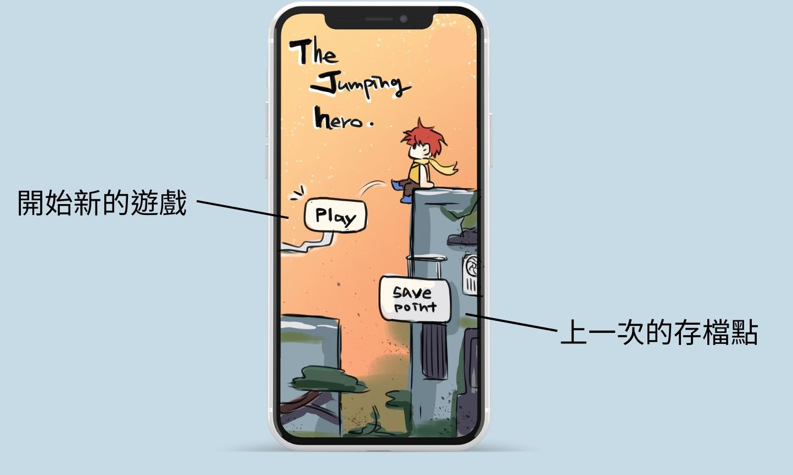
◎遊戲中遊戲介面:主要有遊戲積分，暫停鍵，暫停鍵後有回主頁面跟立即存檔目前的進度，畫面簡潔為主。
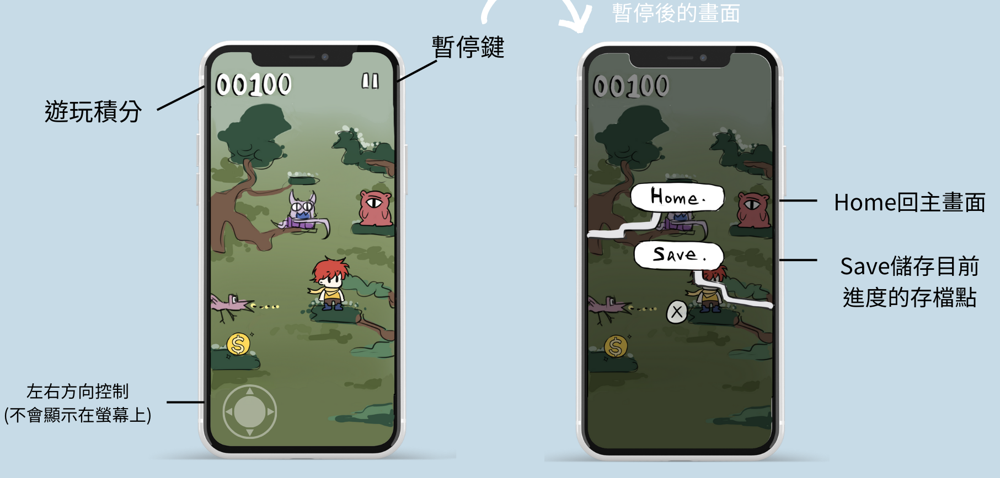
◎遊玩教學
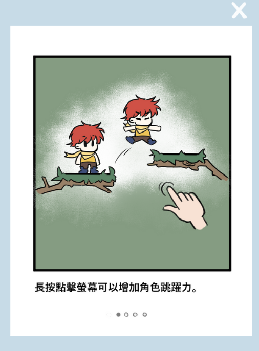
◎存檔點介面(主要點按框框就會存檔，會記錄目前積分，公里數和遊玩時間。)
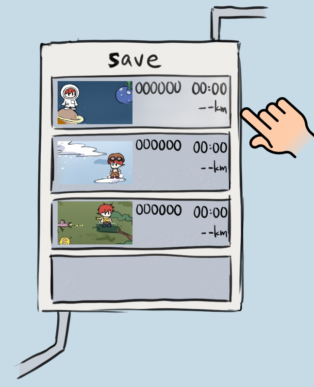
◎最後玩家排名介面(打完Boss結束後，遊戲會依照積累的分數做玩家排名，上方是自己的積分，下方為玩家的歷史最高紀錄。)
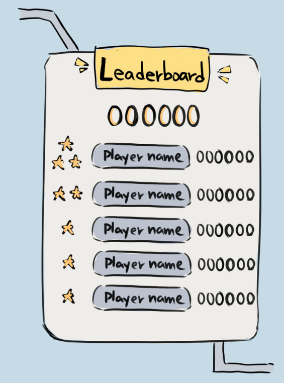
捌、程式列表
使用Unity製作。
1.角色跳躍機制
2.相機追蹤角色
3.資料庫(存檔點、排名)
4.積分機制
5.介面設定
6.動畫置入
7.循環背景
8.Boss機制
9.彩蛋
10.道具機制:護盾/寶箱/金幣/火箭/磁鐵
11.陷阱機制:史萊姆/飛鳥/熊怪/氣流/飛彈/輻射/黑洞/外星人攻擊/隕石
◎設計組：
◎程式組：
拾、進度表
12/24 簡報、企畫書修改完成
1/14 設計：角色、遊戲背景 程式：角色跳躍機制/相機追蹤角色/循環背景
1/28 設計：陷阱物件 程式：陷阱機制
2/15 設計：:道具物件 程式：道具機制
3/15
設計：UI/遊戲音效 程式：積分機制/介面設定
4/15 設計：Boss/彩蛋 程式：Boss/彩蛋機制
5/15 設計：動畫完成 程式：動畫置入/資料庫(存檔點、排名)
6/15 設計與程式整合，檢查有無BUG。